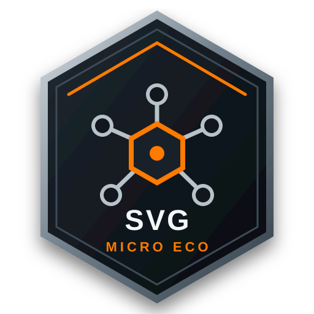

Tool 1 · Live
PathSeal
Find open contours, review questionable gaps, and seal only the paths you approve.
$9.99 per month
Open PathSeal
Skald and Kreepy Productions
SVG Micro Eco
Focused CNC SVG repair
SVG Micro Eco keeps every repair tool inside one shared workspace. Your file stays local while you scan, review, and approve changes.
Tool 1 · Live
Find open contours, review questionable gaps, and seal only the paths you approve.
$9.99 per month
Open PathSealTool 2 · Foundation
Find exact duplicate lines and prepare safe removals without touching questionable geometry.
$9.99 per month
Open Duplicate Line RemoverTool 3 · Planned
Remove isolated nodes while preserving intentional drawing geometry.
$9.99 per month when available
Tool 4 · Planned
Find and resolve overlapping shapes through a review-first workflow.
$9.99 per month when available
Tool 5 · Planned
Inspect and repair damaged curve geometry without blind simplification.
$9.99 per month when available
Build your subscription
Every tool is $9.99 per month. Selecting more tools applies the approved discount to the combined subtotal.
Select at least one available tool to see your monthly quote.
Taxes and any mid-cycle proration will be shown before a future checkout confirmation.